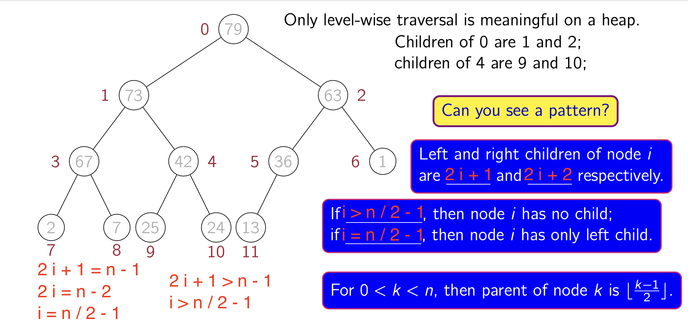
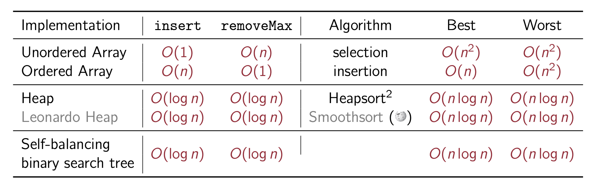
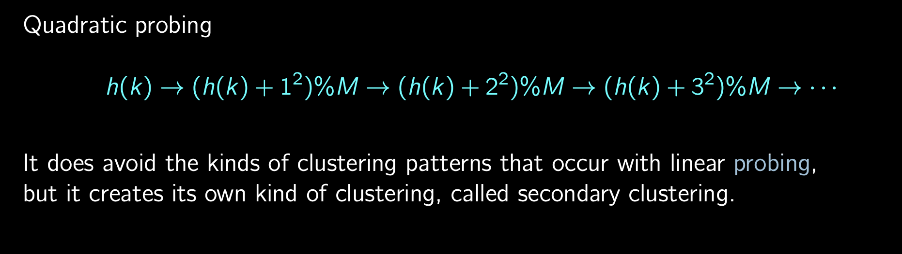
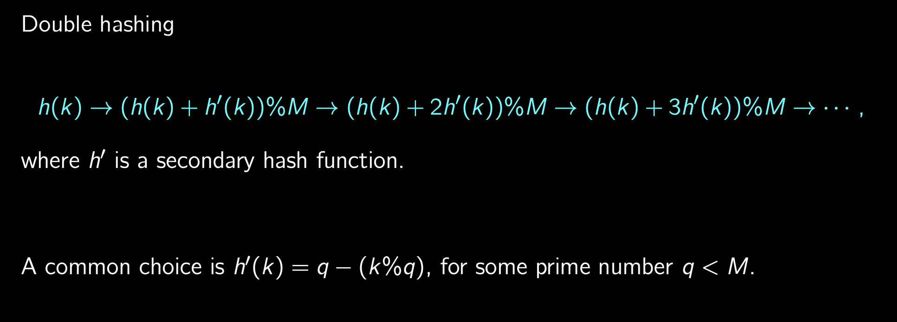

A. Sorting
| Sorting | Running TIme (Worst) | Running TIme (Best) | Stable | Major Iterations | comparisons | Swapping | Example (Unstable) | Example (best case) |
|---|---|---|---|---|---|---|---|---|
| Bubble Sort | θ( n^2 ) | θ( n ) | T | n − 1 (1 in 1,2,3,4,5) | n − i | n − i | ||
| Insertion Sort | θ( n^2 ) | θ( n ) | T | n − 1 | ||||
| Selection Sort | θ( n^2 ) | θ( n^2 ) | F | n − 1 | n - i, (i in 5,4,3,2,1) | |||
| Merge Sort | θ( n log n ) | θ( n log n ) | T | |||||
| Quick Sort | θ( n^2 ) | θ( n log n ) | F | [1, 3, 2, 6, 7, 5, 4, 12, 13, 15, 14, 10, 11, 9, 8] | ||||
| Heap Sort | θ( n log n ) | θ( n log n ) | F | [9, 9, 6], [9, 9], [2, 0, 2, 1], [6, 6, 9], but ([2, 0, 1, 1] & [9, 6, 6] are Stable) |
(a) Bubble or Insertion Sorting uses the least steps when the array is sorted.
(b) Merge Sorting uses the least steps when the array is reversely sorted.
(c) Insertion Sorting uses the least steps when the array is sorted except one element.
(d) Merge Sorting uses the least steps in the worst case.
(e) Selection or Quick Sorting is not stable.
1. Bubble Sorting --- ( o(n^2) )
1, 2, 3, 4, 5, .... --> no swapping, only one major iteration.
void bubbleSort(int[] a) { int n = a.length; int i, j, temp; boolean flag = true;
for (i = 1; flag && (i < n); i++) { flag = false; for (j = 0; j < n - i; j++) { if (a[j + 1] < a[j]) { temp = a[j + 1]; a[j + 1] = a[j]; a[j] = temp; flag = true; } } }}2. Selection Sorting --- ( o(n^2) )
Always n−1 major iterations, n−i comparisons in the ith major iteration
void selectionSort(int[] a) { int length = a.length; int min; for (int i = 0; i < length - 1; i++) { min = i; for (int j = i + 1; j < length; j++) { if (a[j] < a[min]) { min = j; } } swap(a, i, min); }}3. Insertion Sorting --- ( o(n^2) )
1, 2, 3, 4, 5, ... --> one comparison and two movements in each major iteration.
Always n−1 major iterations.
void insertionSort(int[] a) { int length = a.length; for (int i = 1; i < length; i++) { int key = a[i]; int j = i - 1; for (; j >= 0; j--) { if (a[j] <= key) { break; } a[j + 1] = a[j]; } a[j + 1] = key; }}4. Merge Sorting (Recursive) --- ( o(n log n) )
levels --> Θ(logn)
void merge(int[] a, int low, int mid, int high) { int[] temp = new int[mid - low + 1]; for (int i = 0; i < temp.length; i++) { temp[i] = a[low + i]; } int i = 0, j = mid + 1, k = low; while (i < temp.length && j <= high) { a[k++] = temp[i] <= a[j] ? temp[i++] : a[j++]; } while (i < temp.length) { a[k++] = temp[i++]; }}
void mergesort(int[] a, int low, int high) { if (high < 1 + low) { return; } int mid = low + (high - low) / 2; mergesort(a, low, mid); mergesort(a, mid + 1, high); merge(a, low, mid, high);}5. Quick Sorting (Recursive)
levels --> logn ∼ n−1
void naive(int[] a, int low, int high) { if (low >= high) { return; } int pivot = a[high]; int[] b = new int[high - low + 1]; for (int i = 0; i < b.length; i++) { b[i] = a[low + i]; } int l = low, r = high; for (int i = 0; i < b.length; i++) { if (b[i] <= pivot) { a[l++] = b[i]; } else { a[r--] = b[i]; } } System.out.println(Arrays.toString(a)); naive(a, low, l - 2); naive(a, r + 1, high);}
void naiveQuicksort(int[] a) { naive(a, 0, a.length - 1);}6. Heap Sorting
--> to I. Heap [3. Heap Sorting]
B. Searching
1. Linear Searching
public class LinearSearch { public int search(int[] array, int target) { int count = 0; for (int i = 0; i < array.length; i++) { if (array[i] == target) { break; } count++; } return count; }}2. Binary Searching (Iterative) --- ( o(log n) )
public static int binarySearch(int[] a, int key) { int n = a.length; int low = 0, high = n - 1; while (low <= high) { int mid = low + (high - low) / 2; if (a[mid] == key) { return mid; } else if (a[mid] > key) { high = mid - 1; } else if (a[mid] < key) { low = mid + 1; } } return -1;}3. Binary Search (Recursive) --- ( o(log n) )
public static int recursiveBinarySearch(int[] a, int key, int leftIndex, int rightIndex) { int n = (leftIndex + rightIndex) / 2; if (a[n] == key) { return n; } if (a[n] > key) { return recursiveBinarySearch(a, key, 0, n - 1); } return recursiveBinarySearch(a, key, n + 1, rightIndex);}4. Find Max & Min
major: (2n - 2)
xxxxxxxxxxpublic static int findMax(int[] arr, int leftIndex, int rightIndex) { int mid = leftIndex + (rightIndex - leftIndex) / 2; if (leftIndex >= rightIndex) { return arr[mid]; } int m1 = findMax(arr, leftIndex, mid); int m2 = findMax(arr, mid + 1, rightIndex); if (m1 > m2) { return m1; } return m2;}
public static int findMin(int[] arr, int leftIndex, int rightIndex) { int mid = leftIndex + (rightIndex - leftIndex) / 2; if (leftIndex >= rightIndex) { return arr[mid]; } int m1 = findMin(arr, leftIndex, mid); int m2 = findMin(arr, mid + 1, rightIndex); if (m1 < m2) { return m1; } return m2;}
C. Stack
1. Stack
xxxxxxxxxxpublic class Stack < T > { private static final int CAPACITY = 128; private Object[] data; private int top;
public Stack() { this(CAPACITY); }
public Stack(int size) { top = -1; data = new Object[size]; }
// Running time: O( 1 ). public void push(T element) { if (top == data.length - 1) { System.out.println("overflow"); return; } data[++top] = element; }
// Running time: O( 1 ). ("unchecked") public T pop() { if (isEmpty()) { System.out.println("underflow"); return null; } return (T) data[top--]; }
// Running time: O( 1 ). ("unchecked") public T peek() { return (T) data[top]; }
// Running time: O( 1 ). public boolean isEmpty() { return top < 0; }}2. Brackets Check (Stack Application)
xxxxxxxxxx// Running time: O( n ).public static boolean isBalanced(char[] s) { int count = 0; for (int i = 0; i < s.length; i++) { if (s[i] == '(') count++; if (s[i] == ')') count--; if (count < 0) return false; } return count == 0;}
// Running time: O( n ).public static boolean isMultipleBalanced(char[] s) { CharStack stack = new CharStack(); for (int i = 0; i < s.length; i++) { if (s[i] == '(' || s[i] == '[' || s[i] == '{') stack.push(s[i]); if (s[i] == ')') { if (stack.isEmpty()) return false; char c = stack.pop(); if (c != '(') return false; } if (s[i] == ']') { if (stack.isEmpty()) return false; char c = stack.pop(); if (c != '[') return false; } if (s[i] == '}') { if (stack.isEmpty()) return false; char c = stack.pop(); if (c != '{') return false; } } return stack.isEmpty();}
3. Postfix (Stack Application)
xxxxxxxxxxpublic class Postfix { public static void demo(String postfix) { StringTokenizer parser = new StringTokenizer(postfix, " \n\t\r+-*/", true); int i = 0; while (parser.hasMoreTokens()) { String token = parser.nextToken(); System.out.println("token " + (++i) + " is: " + token); } }
public static int evalPostFix(String postfix){ StringTokenizer parser = new StringTokenizer(postfix, " \n\t\r+-*/", true); while (parser.hasMoreTokens()) { String token = parser.nextToken(); } return 0; }
public static void main(String[] args) { demo("3 2 - 1 -"); System.out.println("3 2 - 1 - = " + evalPostFix("3 2 - 1 -")); System.out.println("3 2 1 - - = " + evalPostFix("3 2 1 - -")); System.out.println("5 1 - 2 - 6 5 / + = " + evalPostFix("5 1 - 2 - 6 5 / +")); }}
D. Queue
1. Circular Queue
xxxxxxxxxxpublic class Queue < T > { private static final int CAPACITY = 32; private Object[] data; private int front, rear;
public Queue() { this(CAPACITY); }
public Queue(int size) { data = new Object[size]; front = 0; rear = -1; }
// Running time: O( 1 ). public boolean isEmpty() { return size() == 0; }
// Running time: O( 1 ). public int size() { int size = rear - front + 1 + (front <= rear ? 0 : CAPACITY); if (size == CAPACITY) { return 0; } return size; }
// Running time: O( 1 ). public boolean isFull() { return size() == CAPACITY - 1; }
// Running time: O( 1 ). public void enqueue(T e) { if (isFull()) { System.out.println("Error: queue is full."); return; }
if (++rear == CAPACITY) { rear = 0; } data[rear] = e; }
// Running time: O( 1 ). ("unchecked") public T dequeue() { if (isEmpty()) { System.out.println("Error: empty queue."); return null; }
T a = (T) data[front++]; if (front == CAPACITY) { front = 0; } return a; }
// Running time: O( 1 ). ("unchecked") public T peek() { if (isEmpty()) { System.out.println("Error: empty queue."); return null; }
return (T) data[front]; }}2. Queue on Linked List
xxxxxxxxxxpublic class QueueOnList<T> { private ListWithTail<T> list; QueueOnList() { list = new ListWithTail<T>(); } public void enqueue(T s) { list.insertLast(s); } public T dequeue() { return list.removeFirst(); }
public T peek() { return list.head.element; }}
E. Array
1. Array List
xxxxxxxxxxpublic class ListOnArray { private int[] data; private static final int SIZE = 128;
public ListOnArray() { data = new int[SIZE];
data[0] = 0; for (int i = 2; i < SIZE - 2; i += 2) data[i] = i + 1; data[SIZE - 1] = 1; data[SIZE - 2] = 0; }
public boolean isEmpty() { return data[0] == 0; }
public boolean isFull() { return data[SIZE - 1] == 0; }
public void err() { System.out.println("Oops..."); }
public void insertFirst(int x) { if (isFull()) { err(); return; } int i = data[SIZE - 1]; data[SIZE - 1] = data[i + 1]; data[i + 1] = data[0]; data[0] = i; data[i] = x; }
public void insertLast(int x) { if (isFull()) { err(); return; } if (isEmpty()) { insertFirst(x); return; } int i = 0; while (data[i] != 0) i = data[i] + 1;
int n = data[SIZE - 1]; data[SIZE - 1] = data[n + 1];
data[i] = n; data[n] = x; data[n + 1] = 0; }
public int removeFirst() { if (isEmpty()) { err(); return -1; } int head = data[0]; data[0] = data[head + 1]; data[head + 1] = data[SIZE - 1]; data[SIZE - 1] = head; return data[head]; }
public int removeLast() { if (isEmpty()) { err(); return -1; } int tail = data[0]; if (data[tail + 1] == 0) { return removeFirst(); } int i = 0; while (data[tail + 1] != 0) { i = tail; tail = data[i + 1]; } data[i + 1] = 0; data[tail + 1] = data[SIZE - 1]; data[SIZE - 1] = tail; return data[tail]; }
public void reverse() { if (data[0] == 0 || data[data[0] + 1] == 0) return; int previous = 0, cur = data[0], next; while (data[cur + 1] != 0) { next = data[cur + 1]; data[cur + 1] = previous; previous = cur; cur = next; } data[cur + 1] = previous; data[0] = cur; }}
F. Linked List
| Type | Numbe of Null Reference |
|---|---|
| Linked List | 1 |
| Doubly Linked List | 2 |
1. Linked List
xxxxxxxxxxpublic class List < T > { static class Node < T > { T element; Node < T > next;
public Node(T e) { element = e; next = null; } }
Node < T > head; public List() { head = null; }
public void insertFirst(T e) { Node < T > newNode = new Node < T > (e); newNode.next = head; head = newNode; } public void insertLast(T e) { if (head == null) { insertFirst(e); return; }
Node < T > newNode = new Node < T > (e); Node < T > cur = head; while (cur.next != null) cur = cur.next; cur.next = newNode; newNode.next = null; }
public void insertAfter(T e, Node < T > node) { Node < T > newNode = new Node < T > (e); newNode.next = node.next; node.next = newNode; } public void insertBefore(T e, Node < T > node) { if (head == node) { insertFirst(e); return; }
Node < T > cur = head; while (cur.next != node && cur.next != null) cur = cur.next; Node < T > newNode = new Node < T > (e); newNode.next = cur.next; cur.next = newNode; }
public T removeFirst() { if (head == null) { System.out.println("underflow"); return null; } Node < T > temp = head; head = head.next; temp.next = null; return temp.element; }
public T removeLast() { if (head == null || head.next == null) { return removeFirst(); } Node < T > secondToLast = head; Node < T > last = secondToLast.next; while (last.next != null) { secondToLast = last; last = last.next; }
secondToLast.next = null; return last.element; }
// Running time: O( 1 ). public boolean isEmpty() { return head == null; }
public Node < T > search(T e) { Node < T > cur = head; while (cur != null && cur.element != e) cur = cur.next; return cur; }}2. Reverse Linked List
xxxxxxxxxxpublic Node reverse(Node node) { Node prev = null; Node current = node; Node next = null; while (current != null) { next = current.next; current.next = prev; prev = current; current = next; } node = prev; return node;}3. Doubly Linked List
xxxxxxxxxxpublic class DList < T > { private static class Node < T > { T element; Node < T > next; Node < T > previous;
Node(T a) { element = a; next = previous = null; } }
private Node < T > head, tail;
public DList() { head = tail = null; }
public boolean isEmpty() { return tail == null; }
public void err() { System.out.println("Oops..."); }
public void insertFirst(T e) { Node < T > newNode = new Node < T > (e); newNode.next = head; newNode.previous = null; if (isEmpty()) { tail = head = newNode; return; } head.previous = newNode; head = newNode; }
public void insertLast(T e) { Node < T > newNode = new Node < T > (e); newNode.previous = tail; newNode.next = null; if (isEmpty()) { head = tail = newNode; return; } tail.next = newNode; tail = newNode; }
public T removeFirst() { if (isEmpty()) { err(); return null; } T res = head.element; if (head == tail) { head = tail = null; return res; } head = head.next; head.previous.next = null; head.previous = null; return res; } public T removeLast() { if (head == tail) return removeFirst(); T res = tail.element; tail = tail.previous; tail.next.previous = null; tail.next = null; return res; }
public T removeLast2() { if (isEmpty()) { err(); return null; } T res = tail.element; if (tail == head) { tail = head = null; return res; } tail = tail.previous; tail.next.previous = null; tail.next = null; return res; }
public T remove(Node < T > node) { if (node == head) return removeFirst(); if (node == tail) return removeLast();
node.previous.next = node.next; node.next.previous = node.previous; node.previous = node.next = null; return node.element; }
public void insertBefore(T e, Node < T > node) { if (node == null) err(); if (node == head) { insertFirst(e); return; } Node < T > newNode = new Node < T > (e); newNode.next = node; newNode.previous = node.previous; node.previous.next = newNode; node.previous = newNode; } public void insertAfter(T e, Node < T > node) {
if (node == null) err(); if (node == tail) { insertLast(e); return; } Node < T > newNode = new Node < T > (e); newNode.previous = node; newNode.next = node.next; node.next.previous = newNode; node.next = newNode; }}4. Reverse Doubly Linked List
xxxxxxxxxxpublic void reverse() { Node temp = null; Node current = head;
while (current != null) { temp = current.prev; current.prev = current.next; current.next = temp; current = current.prev; }
if (temp != null) { head = temp.prev; }}5. Circular Doubly Linked List
xxxxxxxxxxpublic class CDList < T > { private static class Node < T > { T element; Node < T > previous, next; Node(T element) { this.element = element; } }
private Node < T > head;
public CDList() { head = null; }
public boolean isEmpty() { return head == null; }
public void err() { System.out.println("Oops..."); }
public void insertFirst(T e) { Node < T > newNode = new Node < T > (e); if (isEmpty()) { newNode.next = newNode; newNode.previous = newNode; head = newNode; return; } newNode.previous = head.previous; newNode.next = head; head.previous = newNode; newNode.previous.next = newNode; head = newNode; }
public void insertAtEnd(T e) { insertFirst(e); head = head.next; }
public T removeFirst() { if (isEmpty()) { err(); return null; } Node < T > deleted = head; if (head.previous == head) { head = null; return deleted.element; } head = head.next; deleted.previous.next = head; head.previous = deleted.previous; deleted.previous = null; deleted.next = null; return deleted.element; }
public T removeLast() { if (isEmpty()) { err(); return null; } head = head.previous; return removeFirst(); }}6. Queue on Linked List
--> to D. Queue [2. Queue on Linked List]
7. Merge Two Linked List
xxxxxxxxxxpublic ListNode mergeTwoLists(ListNode l1, ListNode l2) { ListNode prehead = new ListNode(-1);
ListNode prev = prehead; while (l1 != null && l2 != null) { if (l1.val <= l2.val) { prev.next = l1; l1 = l1.next; } else { prev.next = l2; l2 = l2.next; } prev = prev.next; } prev.next = l1 == null ? l2 : l1;
return prehead.next;}
G. Divide & Conquer
1. Find Peak (Recursive)
xxxxxxxxxxprivate static int recursivePeak(int[] a, int l, int h) { if (l > h) return -1; if (l == h) return l; // L, not 1.
int m = l + (h - l + 1) / 2; // the same as m = (l + h + 1) / 2, but safer. if (a[m] < a[m - 1]) return recursivePeak(a, l, m - 1); else return recursivePeak(a, m, h);}2. Find Max & Min
--> to B. Searching [4. Find Max & Min]
3. Merge Sorting
--> to A. Sorting [4. Merge Sorting]
4. Quick Sorting
--> to A. Sorting [4. Quick Sorting]
5. Towers of Hanoi Problem (Divide & Conquer Application)
xxxxxxxxxxpublic class HanoiTowers { static String[] rods = {"Left", "Center", "Right"}; public static void move(int n, int from, int to) { if(n <= 1) { System.out.println("disk 1: " + rods[from] + " -> " + rods[to]); return; } int via = 3 - from - to; move(n - 1, from, via); System.out.println("disk " + n + ": " + rods[from] + " -> " + rods[to]); move(n - 1, via, to); }
public static void move(int n) { move(n, 0, 2); } public static void main(String[] args) { move(4); }}6. Stable Merger
xxxxxxxxxxprivate static Student[] twoWayMerge(Student[] a1, Student[] a2) { int i = 0, j = 0, k = 0; int n1 = a1.length, n2 = a2.length; Student[] res = new Student[n1 + n2]; while (i < n1 && j < n2) { res[k++] = (a1[i].grade <= a2[j].grade)?a1[i++]:a2[j++]; } for (; i < n1; ) { res[k++] = a1[i++]; } for (; j < n2; ) { res[k++] = a2[j++]; } return res;}private static Student[] kWayMerge(Student[][] a, int begin, int end) { if (begin >= end) return a[begin]; // split evenly into two parts int l = begin, h = end; int m = l + (h - l) / 2; Student[] h1 = kWayMerge(a, l, m); Student[] h2 = kWayMerge(a, m + 1, h); return twoWayMerge(h1, h2);}
public static Student[] merge1(Student[][] a) { return kWayMerge(a, 0, a.length - 1);}
H. Tree
| Type | Numbe of Null Reference |
|---|---|
| Binary Tree | n + 1 |
| Function | Running Time | Best Case | worst Case |
|---|---|---|---|
| Finding a min element | O( n ) | ||
| Insert | O( h ) / O( n ) / O( d ) | ||
| Deletion | O( h ) / O( n ) / O( d ) | ||
| Searching | O( h ) / O( n ) / O( d ) | d = [ log n ] (Tree is Balanced) | d = n - 1 |
| Traversals | |||
| DFS | O( n ) / O( h ) | ||
| BFS / Level Order | O( w ) |
1. Binary Search Tree
xxxxxxxxxxpublic class BinarySearchTree<T> { ("hiding") private class Node<T> { int key; // bad practice; see comment above. T data; public Node<T> leftChild, rightChild;
public Node(int key, T data) { this.key = key; this.data = data; }
public String toString() { return data.toString(); } }
Node<T> root;
public BinarySearchTree() { root = null; }
// the recursive version of insert and its wrapper. public void recInsert(int key, T data) { Node<T> newNode = insert(root, key, data); if (root == null) root = newNode; } private Node<T> insert (Node<T> curRoot, int key, T data) { if (curRoot == null) { Node<T> newNode = new Node<T>(key, data); curRoot = newNode; return curRoot; } if (key <= curRoot.key) curRoot.leftChild = insert(curRoot.leftChild, key, data); else curRoot.rightChild = insert(curRoot.rightChild, key, data); return curRoot; }
// the recursive version of preorder traversal and its wrapper. public void preorder() { preorder(root); } public void preorder(Node<T> curRoot) { if (curRoot == null) return; System.out.println(curRoot.data); preorder(curRoot.leftChild); preorder(curRoot.rightChild); }
// the recursive version of inorder traversal and its wrapper. public void inorder() { inorder(root); } private void inorder(Node<T> curRoot) { if (curRoot == null) return; inorder(curRoot.leftChild); System.out.println(curRoot); inorder(curRoot.rightChild); } // the recursive version of postorder traversal and its wrapper. public void postorder() { postorder(root); } public void postorder(Node<T> curRoot) { if (curRoot == null) return; postorder(curRoot.leftChild); postorder(curRoot.rightChild); System.out.println(curRoot.data); }
public void display() { inorder(root); }
public boolean isEmpty() { return root == null; } public void deleteMin() { if (isEmpty()) { System.out.println("Oops..."); return; } root = deleteMin(root); } private Node<T> deleteMin(Node<T> x) { if (x.leftChild == null) return x.rightChild; x.leftChild = deleteMin(x.leftChild); return x; }
// the recursive version of deletion and its wrapper. public void recDelete(int key) { if (isEmpty()) { System.out.println("Oops..."); return; } root = delete(root, key); } // the trick is on the returned node. private Node<T> delete(Node<T> x, int key) { if (x == null) return null; if (key < x.key) x.leftChild = delete(x.leftChild, key); else if (key > x.key) x.rightChild = delete(x.rightChild, key); else { // x is the node to be deleted. if (x.rightChild == null) return x.leftChild; if (x.leftChild == null) return x.rightChild; Node<T> t = x; x = recFindMin(t.rightChild); x.rightChild = deleteMin(t.rightChild); x.leftChild = t.leftChild; } return x; } }2. Merge Binary Trees
xxxxxxxxxxpublic void mergeTrees(Node root1, Node root2) { if (root1 == null) { return; } if (root2 == null) { return; } root1.key = root1.key + root2.key; root1.left = mergeTrees(root1.left, root2.left); root1.right = mergeTrees(root1.right, root2.right);}
I. Heap
| Function | Big O | |
|---|---|---|
| Heap | Insert | O( log n ) |
| Up | O( log n ) | |
| Down | O( log n ) | |
| removeMax | O( log n ) | |
| Heap Sort | heapsort | O( n log n ) |
| Up | O( log n ) OR O( log size ) | |
| Down | O( log n ) OR O( log size ) |
A Max Heap on n nodes has n / 2 leaves.
1. Implantation of a Heap (Max Heap)

xxxxxxxxxxpublic class Heap <T> { private static class Node <T> { int key; T obj; } private Node<T>[] data; int size;}
void insert(int key, T x) { if (size == data.length) { err("overflow"); return; } data[size] = new Node<T>(key, x); up(size++);}
void up(int c) { if (c == 0) { //root return; } int p = (c - 1) / 2; if (data[c].key <= data[p].key) { return; } swap(c, p); up(p);}
T removeMax() { if (size == 0) { err("downflow"); return null; } T ans = data[0].obj; data[0] = data[--size]; down(0); return ans;}
void down(int i) { if (size < 2 * i + 1) { return; } int leftChildIndex = i * 2 + 1; int rightChildIndex = leftChildIndex + 1; int maxIndex = leftChildIndex; if (rightChildIndex < size && data[leftChildIndex].key < data[rightChildIndex].key) { maxIndex = rightChildIndex; } if (data[i].key >= data[maxIndex].key) { return; } swap(i, maxIndex); down(maxIndex);}2. Priority Queues (Heap Application)
3. Heap Sorting (Heap Application)

xxxxxxxxxxvoid heapsort(int[] a) { for (int i = 1; i < a.length; i++) { up(a, i); } for (int i = a.length - 1; i > 0; i--) { swap(a, 0, i); down(a, 0, i); }}
void up (int[] a, int c) { if (c == 0) { return; } int p = (c - 1) / 2; if (a[c] <= a[p]) { return; } swap(a, c, p); up(a, p);}
void down(int[] a, int p, int s) { if (p * 2 + 2 > s) { return; } int l = p * 2 + 1; if (l + 1 < s && a[l] < a[l + 1]) { l++; } if (a[p] >= a[l]) { return; } swap(a, p, l); down(a, l, s);}Heapify (turn something into a heap): O(n log n) (can be down in O(n))
RemoveMax: O(n log n)
Heap Sorting is unstable.
- Example: [9, 9, 6], [9, 9]
J. Hashing
1. Linear Probing Hash
xxxxxxxxxxpublic class LinearProbingHash { private int M; private int[] data; private boolean[] tombstone; private int size = 0;
LinearProbingHash(int initialCapacity) { this.M = initialCapacity; data = new int[M]; tombstone = new boolean[M]; // initial every entry to be -1 (meaning null). Arrays.fill(data, -1); // The following can be omitted, because Java always do this during its initialization. Arrays.fill(tombstone, false); }
public void insert(int key) { // Actually, we should take action once size/M >= 0.5. if (size == M) { System.out.println("overflow"); return; } int i; for (i = hash(key); (!tombstone[i]) && data[i] != -1; i = (i + 1) % M) { if (data[i] == key) break; } data[i] = key; tombstone[i] = false; size++; }
public int search(int key) { if (size == M) for (int i = 0; i < M; i++) { if (key == data[i]) return i; } else for (int i = hash(key); tombstone[i] || data[i] != -1; i = (i + 1) % M) if ((!tombstone[i]) && key == data[i]) return i; return -1; // meaning not found }
public void delete(int key) { int i; if (size == M) for (i = 0; i < M; i++) { // this pair of parentheses cannot be omitted! if (key == data[i]) break; } else for (i = hash(key); tombstone[i] || data[i] != -1; i = (i + 1) % M) if ((!tombstone[i]) && key == data[i]) break;
if (key != data[i]) return; // not found tombstone[i] = true; data[i] = -1; // optional and suggested size--; }
int hash(int key) { return key % M; }}
2. Separate Chainning
xxxxxxxxxxpublic class SeparateChainning { private List <Integer> [] data; private final int size;
("unchecked") public SeparateChainning(int size) { this.size = size; data = new List[size]; for (int i = 0; i < size; i++) data[i] = new List <Integer>(); }
// very stupid one. public int hash(int key) { return key % size; }
/* * worst: O(1). */ public void insert(int key) { int h = hash(key); data[h].insertFirst(key); // O(1) time. }
/** * return a boolean value to indicate whether key is in the hash table. * worst: O(n); average: O(1). */ public boolean search(int key) { int h = hash(key); return (data[h].search(key) != null); }
/** * TODO: to make it work, we need to add delete() to class LinkedList. * * worst: O(n); average: O(1). */ public void delete(int key) { int h = hash(key); // data[h].delete(key); }}
3. Duplicate Character
xxxxxxxxxxstatic boolean duplicateChar(String s) { int range = 65536; // 256 for ASCII, and 65536 for Unicode. boolean[] b = new boolean[range]; if (s.length() > range) return true; // pigeonhole's principle. for (int i = 0; i < s.length(); i++) { int c = s.charAt(i); if (b[c]) return true; else b[c] = true; } return false;}
4. Other Hashing
4.1 Quadratic Probing Hash

4.2 Double Hashing

Overall